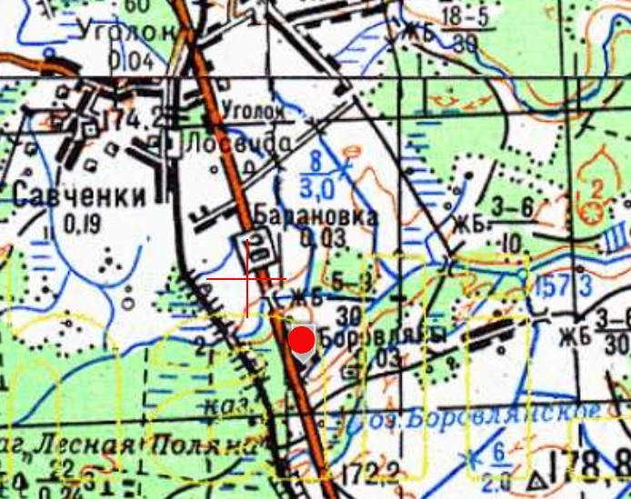
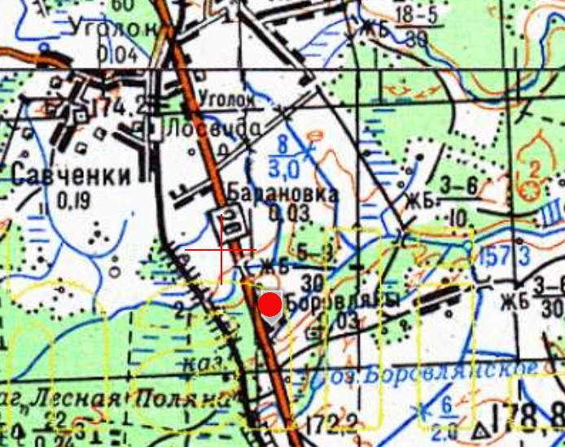
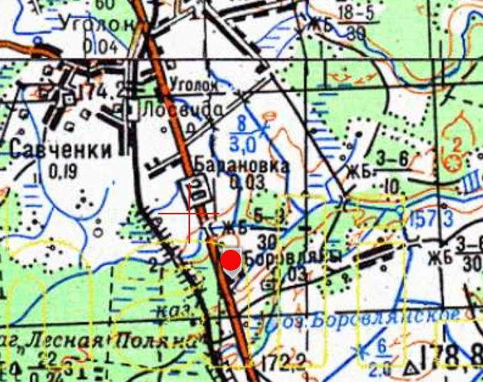

Інфармацыя № 8: Месца былога канцлагера і месца пахавання савецкіх ваенапалонных
1. Месца і дата пахавання: Республика Беларусь, Витебская обл., Витебский район, Мазоловский с/с, д. Лужесно
2. Тып пахавання: место захоронения советских военнопленных и мирного населения
3. Памеры пахавання: не выявлены
4. Кароткае апісанне пахавання: -
5. Колькасць пахаваных: -
6. Персанальныя звесткі: -
7. Дадатковая інфармацыя: У 1941–1942 гг. каля д. Бараўляны, у комплексе будынкаў былой паштовай станцыі, які да вайны займала арганізацыя Учдор № 756 фашысты размесцілі савецкіх ваенапалонных. У лагеры ўтрымліваліся каля 250 чалавек. Зняволенныя займаліся рамонтам шашы Віцебск–Гарадок . Па расповядам мясцовых жыхароў шмат ваенапалонных памёрла ад непасільнай працы, голаду, хваробаў. Іх целы выкідвалі на балота, якое знаходзілася за будынкамі паштовай станцыі. Пасля вайны ў выніку меліярацыі поле асушылі і выкарыстоўвалі для вырошчвання сельскагаспадарчых культур. Часта пры ўзворванні трапляліся чалавечыя астанкі. Прапануем увекавечыць месца былога канцлагера шляхам усталявання мемарыяльнай шыльды на будынку былой станцы і памятнага крыжа побач.
Нацыянальны архіў Рэспублікі Беларусь. – Ф. 4-п. –Воп. 33а. –Спр. 154. – Арк. 134; Ф. 378. – Воп. 1. – Спр. 95. – Арк. 2; Лагеря советских военнопленных в Беларуси 1941–1944: справочник / авт.-сост. В.И. Адамушко [и др.]. – Мн.: НАРБ, 2004. – С. 99–101 [Лагеря военнопленных с неустановленными классификационными признаками]
